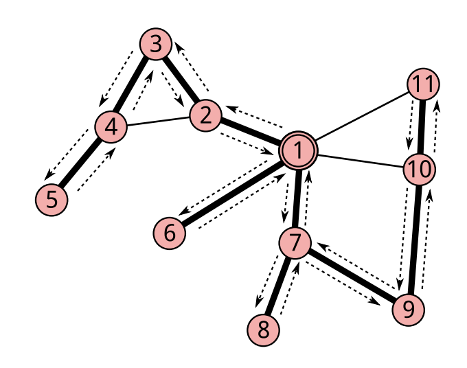
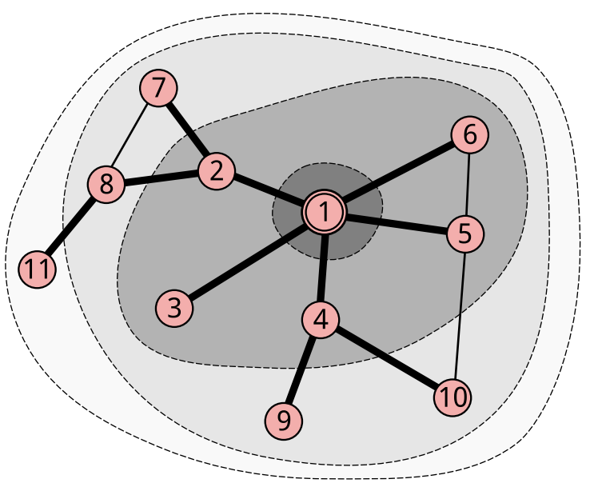

Penjelajahan Graf
Penjelajahan graf adalah teknik dasar yang wajib dikuasai dalam pemrograman kompetitif. Algoritma seperti BFS dan DFS sering digunakan untuk berbagai tujuan, seperti mencari jalur, mendeteksi siklus, memeriksa keterhubungan, dan menemukan shortest path.
Pengenalan Penjelajahan Graf
Penjelajahan graf adalah proses mengunjungi semua vertex dalam graf secara sistematis. Ada dua algoritma utama untuk penjelajahan graf:
- Breadth-First Search (BFS) - Penjelajahan melebar
- Depth-First Search (DFS) - Penjelajahan mendalam
Kedua algoritma ini memiliki karakteristik dan kegunaan yang berbeda, sehingga penting untuk memahami kapan menggunakan masing-masing algoritma.
Konsep Dasar
Sebelum membahas algoritma penjelajahan, kita perlu memahami konsep visited array - sebuah array boolean yang menandai vertex mana saja yang sudah dikunjungi untuk menghindari infinite loop.
Mari kita gunakan graf contoh berikut untuk menjelaskan kedua algoritma:
graph LR
0 --- 1
0 --- 2
1 --- 3
2 --- 4
3 --- 5
4 --- 5Graf dengan 6 vertex (0-5) dan 6 edges.
Depth-First Search (DFS)
DFS adalah algoritma penjelajahan yang mengunjungi vertex secara mendalam - artinya kita mengikuti satu jalur sejauh mungkin sebelum backtrack dan mencoba jalur lain.
Karakteristik DFS:
- Menggunakan stack (LIFO - Last In First Out) atau rekursi
- Mengunjungi vertex secara mendalam terlebih dahulu
- Cocok untuk deteksi cycle, topological sort
- Backtracking approach
Implementasi DFS (Rekursif)
Implementasi DFS (Iteratif)
Langkah-langkah DFS:
Visualisasi langkah-langkah DFS dimulai dari vertex 0 
Gambar diambil dari Buku Pemrograman Kompetitif Dasar TOKI
- Mulai dari starting vertex, tandai sebagai visited
- Rekursi/Stack: Untuk setiap tetangga yang belum dikunjungi:
- Tandai sebagai visited
- Lakukan DFS dari tetangga tersebut
- Backtrack: Ketika tidak ada tetangga yang belum dikunjungi, kembali ke vertex sebelumnya
Contoh Eksekusi DFS
| Contoh Program DFS | |
|---|---|
Output:
Kompleksitas DFS
| Aspek | Kompleksitas |
|---|---|
| Time Complexity | O(V + E) |
| Space Complexity | O(V) |
Breadth-First Search (BFS)
BFS adalah algoritma penjelajahan yang mengunjungi vertex secara melebar - artinya kita mengunjungi semua tetangga langsung dari vertex saat ini sebelum pindah ke level yang lebih dalam.
Karakteristik BFS:
- Menggunakan queue (FIFO - First In First Out)
- Mengunjungi vertex berdasarkan jarak dari starting vertex
- Menjamin path terpendek dalam unweighted graph
- Level-by-level traversal
Implementasi BFS
Langkah-langkah BFS:
Visualisasi langkah-langkah BFS dimulai dari vertex 0 
Gambar diambil dari Buku Pemrograman Kompetitif Dasar TOKI
- Inisialisasi: Masukkan starting vertex ke queue, tandai sebagai visited
- Loop: Selama queue tidak kosong:
- Ambil vertex dari depan queue
- Proses vertex tersebut
- Masukkan semua tetangga yang belum dikunjungi ke queue
- Tandai tetangga sebagai visited
Contoh Eksekusi BFS
Output:
Kompleksitas BFS
| Aspek | Kompleksitas |
|---|---|
| Time Complexity | O(V + E) |
| Space Complexity | O(V) |
- V = jumlah vertex
- E = jumlah edges
Kapan Menggunakan BFS vs DFS?
Gunakan BFS ketika:
- Mencari shortest path dalam unweighted graph
- Level-order traversal diperlukan
- Breadth-wise exploration lebih penting
- Solving puzzle dengan minimum moves
- Tree/graph level analysis
Gunakan DFS ketika:
- Cycle detection dalam graf
- Topological sorting
- Exploring all possible paths
- Connected components analysis
- Backtracking problems
- Tree traversal (pre/post-order)
Perbandingan BFS vs DFS
| Aspek | BFS | DFS |
|---|---|---|
| Data Structure | Queue (FIFO) | Stack/Recursion (LIFO) |
| Memory Usage | O(V) | O(V) |
| Shortest Path | ✅ Unweighted | ❌ Tidak menjamin |
| Cycle Detection | ✅ Possible | ✅ Natural |
| Connected Components | ✅ Good | ✅ Excellent |
| Topological Sort | ❌ Tidak cocok | ✅ Natural |
| Maze Solving | ✅ Optimal path | ✅ Any path |
Contoh
Tips untuk Competitive Programming
Visited Array
Selalu reset visited array saat melakukan multiple traversal:
Infinite Loop
Pastikan selalu menandai vertex sebagai visited sebelum memasukkannya ke queue/stack untuk menghindari duplicate processing.